“Business analyst” seemed too limiting. “Data analyst” was a contender, but we felt that title might
limit what people could do. After all, many of the people on our teams had deep engineering expertise.
“Research scientist” was a reasonable job title used by companies like Sun, HP, Xerox, Yahoo, and IBM.
However, we felt that most research scientists worked on projects that were futuristic and abstract,
and the work was done in labs that were isolated from the product development teams. It might take years
for lab research to affect key products, if it ever did. Instead, the focus of our teams was to work on
data applications that would have an immediate and massive impact on the business. The term that seemed
to fit best was data scientist: those who use both data and science to create something new.
[..] a data scientist is a predictive analytics professional who uses statistics and
predictive modeling to solve business problems, and who has experience with tools for organizing
unstructured, often streaming Big Data. They can work with a wide variety of data, as they have the
skills to build their own utilities to acquire and clean it, and don’t rely on out-of-the-box solutions to
structure their data.
Technical expertise - the best data scientists typically have deep expertise in some scientific discipline.
Curiosity - a desire to go beneath the surface and discover and distill a problem down into a very clear set of hypotheses that can be tested.
Storytelling - the ability to use data to tell a story and to be able to communicate it effectively.
Cleverness - the ability to look at a problem in different, creative ways.
Warning to the wise
Over the time, data scientist become a bloated term as everyone wanted to add something to it.
Ironically, the expanded expectations of Data Scientists are a product of their own success.
The ability to advise executives, understand deeply technical problems, communicate, (*INSERT ENDLESS LIST*),
illustrates that business leaders see Data Scientists as a bridge that can finally align IT and Business
in a much more permanent and productive manner.
Data Science = ½ Technology + ½ People
Data science is not a process or a field that can be simply automated or replaced by a smart technology.
This is a field in which people use advanced technology to do research that wouldn't be viable otherwise and gain powerful insights shaping the business today.
More often toolkit will be chosen to suit a team not the team hired to work with a given set of tools.
Of course, it is different story with a single hire into an existing team.
Some companies that made their business around data science believe that humans will never be replaced by machines.
What data scientists do?
Find trends and patterns among noise,
Visualize and communicate results,
Implement advanced algorithms for analysis,
Develop application and dashboards,
Design sound experiments,
Ask the right questions,
Focus on actionalbe insights,
Gain subject expertise,
...
Data scientists come in different flavours:
Data business person answers business questions such as forecasting the revenue for the next year.
Data creative explores data revealing new patterns and people experiences, dives into data gain new insights.
Data engineer creates the platform to answer business questions such as computational clusters with Apache Hadoop or Spark, Anaconda tool-set, dashboards, ..., and rich variety of others.
Data researcher models data and develop algorithms to predict the future, people's tastes, loyalty, and how to optimise those events.
... and different flavours of data scientists spend their time differently...
The width is per cent of data scientist answering the survey.
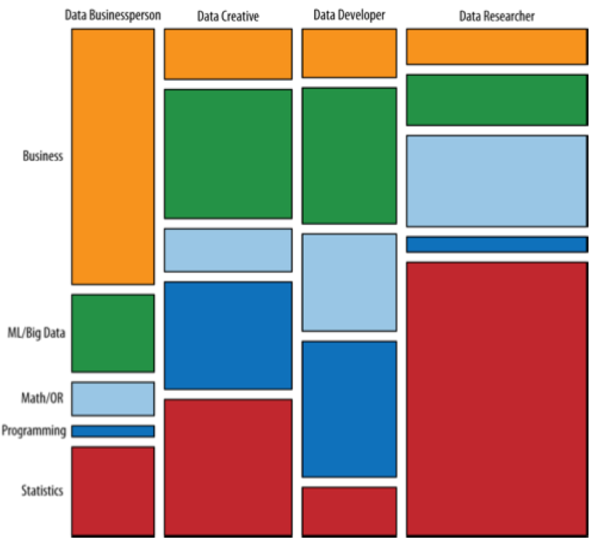
Data Science Expertise
Software Engineer
Statistician
Business Analyst
Data Scientist
Business Analysis
The least transferable skill and for quite obvious reasons most domain related. Also compared to others
quickest to learn.
The good news is that most companies are willing to hire candidates with strong background in
mathematics/statistics and software engineering and to teach them required domain knowledge.
At the same time, essential skills such as storytelling and ability to express complex ideas clearly require
a lot of practice, but are often neglected by graduates from scientific backgrounds.
Don't be one of them!
Kickoff cheatsheet, for starters in BA...
Work smart!
One salutary incident that I recall concerned a British mathematical physicist and an American
theoretical physicist, Dr. Charles Kittel, who had been set together, side by side, to work on
the problem of deducing the characteristics of German magnetic mines laid at sea, especially
the sensitivity and polarity of the firing mechanism. The data from which the characteristics were
to be deduced were the reports of our minesweepers as they exploded the mines, with the positions of
the explosions being reported as ranges and bearings from the minesweepers. The first thing that Kittel
wanted to do was to take a few trips on a minesweeper to sample the data for himself. The British
theorist refused to do this, on the argument that he could only make a few trips, and therefore any
experience so gained might be heavily biased, and therefore much too dangerous as a basis for
generalization. So he stuck to his desk while Kittel went out minesweeping. What Kittel immediately
found was that the reports from the minesweeping crews were wildly inaccurate as regards both range and
bearing, and the only item of data on which one could rely was whether the mine had exploded to port or
starboard. Simplifying all the later reports down to this extremely limited observation, he nevertheless
succeeded in deducing the answer; but the British theorist went on accepting the data as accurate and
never reached an answer.
[..] the United States air force had a serious problem: its pilots could not keep control of their planes [..] the problems were so frequent and involved so many different aircraft that the air force had an alarming, life-or-death mystery on its hands. [..] At first, the military brass pinned the blame on the men in the cockpits, citing “pilot error” as the most common reason in crash reports. This judgment certainly seemed reasonable, since the planes themselves seldom malfunctioned. [..] piloting skills were not the cause of the problem. If it wasn't human or mechanical error, what was it? [..] officials turned their attention to the design of the cockpit itself. [..] when the army was designing its first-ever cockpit, engineers had measured the physical dimensions of hundreds of pilots, and used this data to standardize the dimensions of the cockpit. [..] In 1950, [..] measured more than 4,000 pilots on 140 dimensions of size [..] and calculated the average for each of these dimensions. [..] the consensus among fellow air force researchers was that the vast majority of pilots would be within the average range on most dimensions. After all, these pilots had already been pre-selected because they appeared to be average sized. [..] The scientists also expected that a sizable number of pilots would be within the average range on all 10 dimensions. But even Daniels was stunned when he tabulated the actual number.
Zero.
Out of 4,063 pilots, not a single airman fit within the average range on all 10 dimensions. [..] There was no such thing as an average pilot.
James Veitch's story proving that you can make even a talk about SPAM exciting
Good presentations
touch your heart then your mind.
show your passion.
lead the audience to enlightenment (a.k.a. "aha" moment).
are personal (you have to be trustworthy).
are only as long as they need to be. TED suggest that the optimal presentation time is 18 minutes.
cause the action you intended.
bring the message in a way everyone in audience can relate to and understand.
use clear and strong visual information, but only as much as it is needed.
connect you with the audience.
Aristotle's triad
There are 3 elements to every good rhetoric:
logos (gr. words; here meaning logic) - your arguments must have logical flow, learn both syllogisms and logical fallacies and use them to your advantage;
Although Cathy is over 60 years old, she's also relatively tech-savvy and already watches her
favourite shows on Netflix. Karl, on the other hand, subscribes to sport broadcasting channels -
experience hard to replicate online. Therefore, Cathy is much more likely to cut the cord and
we should make a special offer to her and not Karl.
ethos (gr. character; here meaning ethics) - appeal to the character of the speaker and possibly ethical and moral system; show the audience you are to be trusted on "this"
First of all, I have to say, as a businessman, I get along with everybody. I have business
all over the world. [..] We need people that know what the
hell they’re doing. And politicians, they’re all talk, they’re no action. And that’s why people are
supporting me.
If you understand how to influence people then you will be able also to spot when people try to influence
you.
Not everyone has always genuine intentions when influencing you - just take for example politicians and not everyone is a great presenter - take for example your least favourite teacher.
By knowing ways to influence people you also will be able to better distill the truth from bias.
Important note #1
In large organisations, such as where there is the most work for data scientists, you will need to listen
more often than to give a speech. Hence, applying this skill in the opposite direction helps you get
the information and understanding of data you need from the speaker.
The value of this is not to be undermined, even more given that
A lot of times, people don't know what they want until you show it to them.
Steve Jobs
Important note #2
BTW, if you want to say that this all logos, ethos, and pathos is not how one should deliver a presentation or speech then...
... you have been a victim to the paper clip guy.
When you are presenting, you are selling your idea.
It is no good to someone if you are unable to sell it.
To me, job titles don’t matter. Everyone is in sales. It’s the only way we stay in business.
Harvey Mackay
Great speeches do not only influence people, organisations, audience, but also inspire and motivate them,
and they can even change the world, but only if you will be able to touch their hearts.
Surprisingly enough, logos (logic) is only 10% of the most successful presentations. You must have
the hard evidence, but you also need to make people care about your message.
Aristotle knew that pathos must be part of each oratory 2350 years ago!
Raw data is very rarely successful and passion of the speaker is 3rd most significant factor, considered
in funding decisions by angel investors.
The only way to be truly satisfied is to do what you believe is great work.
And the only way to do great work is to love what you do.
If you haven't found it yet, keep looking.
Don't settle.
Franklin Delano Roosevelt
The only thing we have to fear is fear itself.
Albert Einstein
If you can't explain it simply, you don't understand it well enough.
Winston Churchill
If you're going through hell, keep going.
John F. Kennedy
A man may die, nations may rise and fall, but an idea lives on.
Joseph Stalin
Ideas are more powerful than guns. We would not let our enemies have guns, why should we let them have ideas.
Ronald Reagan
The most terrifying words in the English language are: I'm from the government and I'm here to help.
Mahatma Gandhi
Live as if you were to die tomorrow; learn as if you were to live forever.
The power of character
Go as far as you can see; when you get there, you'll be able to see farther.
Categories such as time, space, cause, and number represent the most general relations which exist
between things; surpassing all our other ideas in extension, they dominate all the details of our
intellectual life. If humankind did not agree upon these essential ideas at every moment, if they did
not have the same conception of time, space, cause, and number, all contact between their minds would be
impossible...
Emile Durkheim, Les formes élémentaires de la vie religieuse (Paris, 1912)
Statistical Graphics
Statistical graphics are instruments to help people reason about quantitive information.
Often the most effective way to describe, explore, and summarize a set of numbers - even a very large set - is to look at pictures of those numbers.
Of all methods for analyzing and communicating statistical information, well-designed data graphics are usually the simplest and at the same time the most powerful.
Human eye have amazing ability to extract a lot of information from a small area (example on the next slide).
So, how to visualize statistical information?
The below map contains location and boundaries of 30,000 communes. Tabular representation of the same data would require 240,000 numbers. Graphical representations have incredible ability to compress data.
Graphical Excellence
Excellence in statistical graphics consists of complex ideas communicated with clarity, precision, and efficiency. Graphical displays should
show the data
induce the viewer to think about the substance rather than about methodology, graphic design, the technology of graphic production, or something else; do not be a victim to fancy computer generated effects that only produce clutter
avoid distorting what the data have to say; present data in a simplest possible way, but not too simple
present may numbers in a small space; if you need to reference figure again you can avoid writing "fig 1.", but can post thumbinal instead
Graphical Excellence
make large data sets coherent
encourage the eye to compare different pieces of data
reveal the data at several levels of detail, from a board overview to the fine structure
serve a reasonably clear purpose: description, exploration, tabulation, or decoration
be closely integrated with the statistical and verbal description of a data set.
optimise data-ink used; if a line, dot, arrow, text, etc. do not contribute to increasing information in the graph then likely it should not be there
Graphics need to make data clearer. Shape data to lead observer to conclusion.
$$
\begin{equation}
\begin{split}
\mbox{lie factor} &= \frac{\mbox{size of effect shown in graphic}}{\mbox{size of effect in data}}
\end{split}
\end{equation}
$$
Lie factor within $ [0.95, 1.05] $ is acceptable, beyond that means that data is misleading.
Can also define $ log LF $, where $ log LF < 0 $ means that data is underrepresented and $ log LF > 0 $ means that is overrepresented.
Dimensionality expansion (e.g. showing stock price of crude oil in 3D barrels: 1D -> 3D) leads to $ LF $ explosion due to power factor.
$ LF $ of $ 9.4 $
In the below picture $ 454\% $ price increase is displayed as $ 4,280\% $ increase.
Here, the problem is too strong emphasis on design variation, without regard for reflecting the actual data variation.
The confounding of design variation with data variation over the surface of graphic leads to ambiguity and deception.
Reflect data dimensionality and do not inflate the dimensions (design dimensionality should be less or same as data dimensionality).
Show data variation, not design variation
However, it generally is a good idea to introduce other design variation (e.g. depth, shade, number instead of point, etc.) to represent data dimensions with less design dimensions.
But, how bad can it be? Unfortunately, enormous amount of data printed over and over and published over the Internet are not only misguiding, but also painful to watch.
Not only this pie chart data could be presented using a table:
Race
Convictions
White
6584
Black
2356
Asian
1161
Mixed
508
Not stated
1046
Other
124
Information is repeated with colour and numbers.
The same chart is repeated multiple times making it only less visible.
The pie charts are presented in perspective making the reading of graphical data even trickier.
Even data is wrong. Convictions are meaningless if we don't know, for instance, total population.
The worst bar plot ever
What is height of those bars? The 3D and plain color makes reading the data only harder, so what is a point of it?
What does the thickness represent? Couldn't those just be lines or even a table?
Raccoon to snow ratio
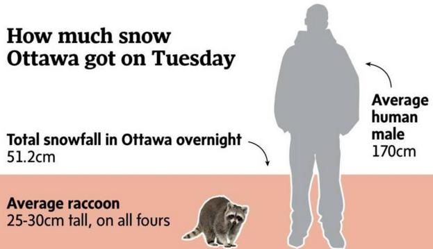
I actually my starting using this one. It is hilarious :)!
Money Handling
Money value changes over time with inflation, but also can be influenced by factors such as time-value of money. Simply plotting nominal value over time is going to lead to terribly bad conclusions.
When we talk about money over multiple years then often we will want to use adjusted value. But, it is not limited to money and applies to everything that changes value over time.
Money Handling
Context principle
To be truthful and revealing, data graphics must bear on the question at heart of quantitative thinking: "Compared to what?". The emaciated, data-thin design should always provoke suspicion, for graphic often lie by omission, leaving out data sufficient for comparison.
Graphics must not quote data out of context.
Local government could advertise a success of police, attributed to increased number of controls, in death reduction, but does the below graph tell the truth?
We can easily imagine data to look like in one of the subplots. Actually the red line here shows the actual data, with the thick line being the graph from the previous slide.
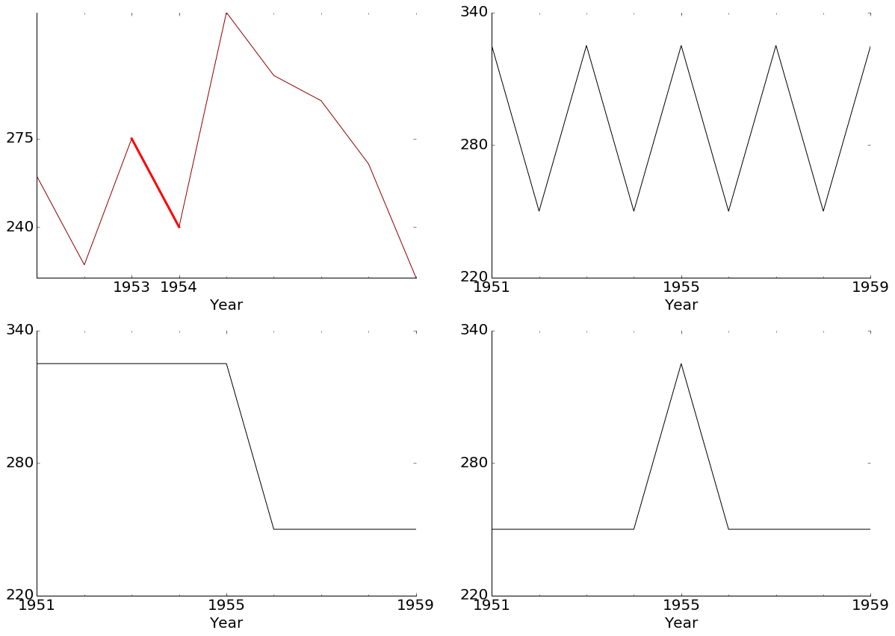
No context = no information
Can you believe that it was published by World Bank?
Principles of statistical data design
Dimension principle
The number of information-carrying (variable) dimensions depicted should not exceed the number of dimensions in the data.
Lie factor principle
$$ 0.95 < LF < 1.05 $$
Money principle
In time-series display of money, deflated and standarized units of monetary measurements are nearly always better than nominal units.
Data-ink principle
Context principle
Graphics must not quote data out of context.
No information, what do you even make graph for?
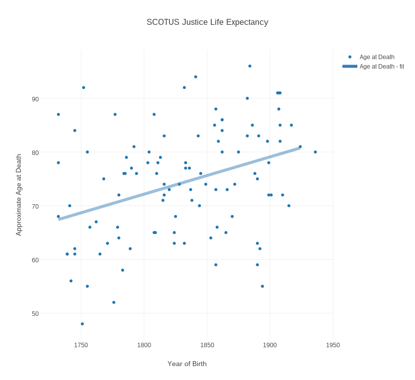
Ambiguity, people can see different things in your data.
If something is non-cannonical it requires different representation or labelling aid.
Different people have different perceptions of data
perceived area of circle
diff context => different interpretations
make it clear using labels, do not leave anything ambigious
Reduce data understanding burden
How many times do you need to travel between legend and regions in the following and still not to understand a thing
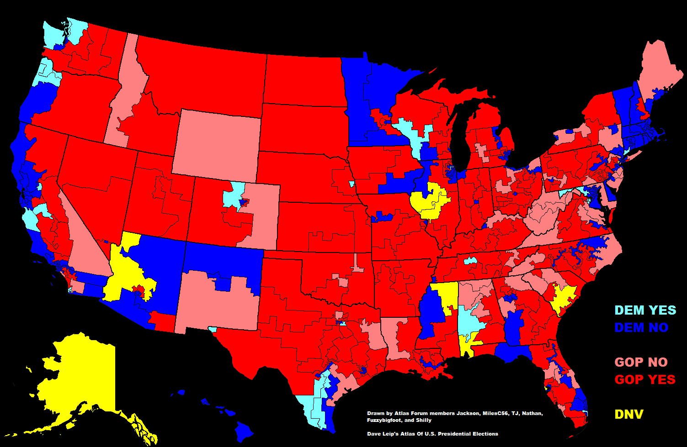
Interesting data made unreadable
How to find who your occupation maries (pay attention to gender).
How to find occupations ... etc.
What the number mean?
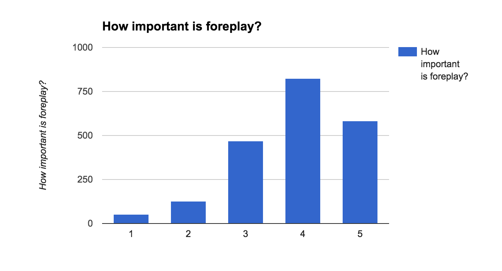
Six principles of data integrity
The representation of numbers, as physically measured on the surface of the graphic intself, should be directly proprotional to the numerical quantities represented.
Clear, detailed, and thorough labeling should be used to defeat graphical distortion and ambiguity. Write out explanations of the data on the graphic itself. Label important events in the data.
Show data variation, not design variation.
In time-series displays of money, deflated and standarized units of monetary measurement are nearly always better than nominal units.
The numbe of information-carrying (variable) dimenions depicted should not exceed the number of dimensions in the data.
Graphics must not quote data out of context.
Graphical mediocrity
lie;
employment only of simple designs, understandarized time-series based on a small handful of data points;
missing the real news actually in the data;
underestimating the capability of the reader to read and understand the data
Use ink as effectively as possible.
Data graphics should draw the viewer's attention to the sense and substance of the data, not to something else.
Esentially, statistical graphics should help people reason about quantitiative information.
Above all else show the data.
A large share of ink on a graphic should present data-information, the ink chaning as the data change. Data-ink is the non-erasable core of a graphic, the non-redundant ink arrange in response to variation in the numbers represented.
Data-ink ratio = data-ink / total ink used to print the graphic
= proprition of graphic's ink devoted to non-redundant display of data-information
= 1.0 - proprotion of a graphic that can be erased without loss of data-information.
Good example, very high data-ink ratio:
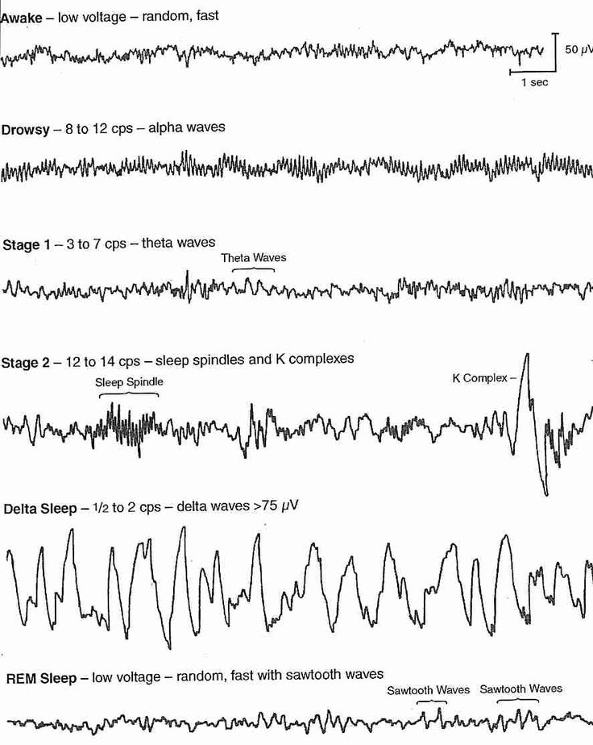
Grid clutter
Grids have no place in graphs. Only exception when one need to follow data, but then it needs to be less visible than data. Can be replaced with labels, etc.
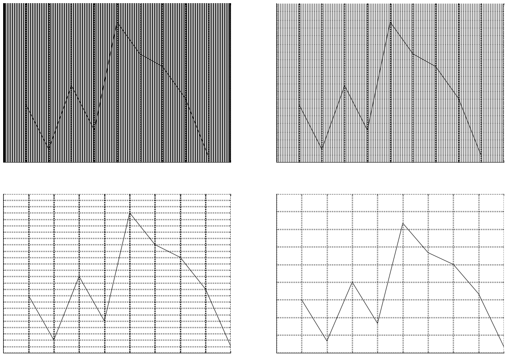
Some ink saving can be found where you do not expect them
Example, symmetry. When analyzing faces, wazes, etc., people examine only one side and if other is symmetric then once they quickly find it they stop analysing it. So, we can save half-the-ink by dividing along the symmetry. Also if we have asymetry then we can easily indicate it by displaying the whole.
Chernoff faces
Sometimes good also to add data
To not force people to connect right and left edge (e.g. maps).
Here, we use redundancy to lessen the cognitive burden.
Duck clutter
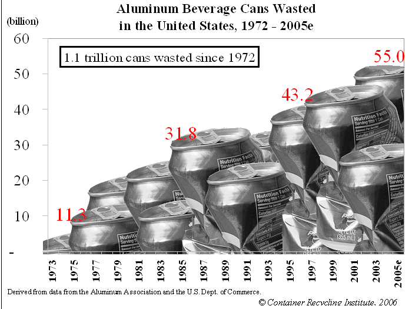
Statistical Illustrator Toolbox
data maps
time-series
space-time narrative design
relation graphics
Data Maps
Data Maps
The maps repay careful study. Notice how quickly and naturally our attention has been directed toward exploring the substantive content of the data rather than toward questions of methodology and technique.
John Snow's map lead to removal of water pump handle that was spreading Cholera and in the result saving hundreds of lives.
March of Napoleon army
Mouse over to zoom in.
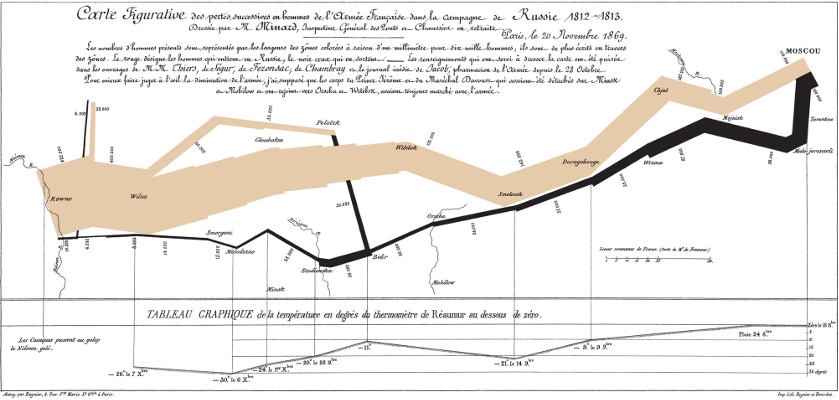
Time-series
The most frequently used form of graphic design (about 75%).
With one dimension marching along the regular rhythm of seconds, minutes, hours, days, weeks, months, years, centuries, or millennia, the natural ordering of the time scale gives this design a strength and efficiency o interpretation found in no other graphic arrangement.
Best for big data sets with real variabiliy.
Small, noncomparative, highly labeled data sets usually belong in tabels.
Different ways of incorporating time.
Life cycle of japan beetle
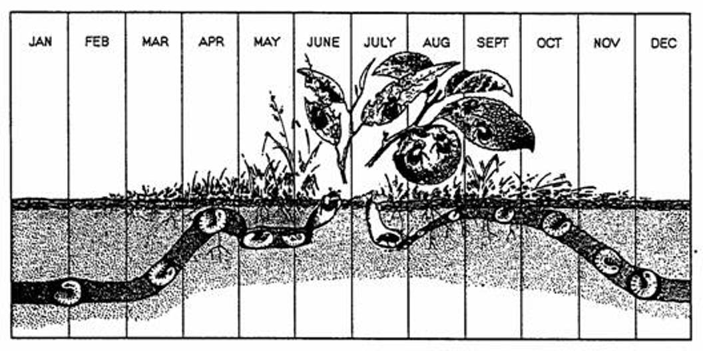
Pie chart explaining why pie charts are useless
You have to give it - both entertaining and making a point.
Computers are learning to think, read, and write. They’re also picking up human sensory function, with the ability to see and hear (arguably to touch, taste, and smell, though those have been of a lesser focus). Machine intelligence technologies cut across a vast array of problem types (from classification and clustering to natural language processing and computer vision) and methods (from support vector machines to deep belief networks). All of these technologies are reflected on this landscape.
This doesn't include big data
Selected from a list of 2,529 companies.
The giants in search (Google, Baidu), social networks (Facebook, LinkedIn, Pinterest), content (Netflix, Yahoo!), mobile (Apple) and e-commerce (Amazon) are in an incredible position. They have massive datasets and constant consumer interactions that enable tight feedback loops for their algorithms (and these factors combine to create powerful network effects) — and they have the most to gain from the low hanging fruit that machine intelligence bears.
big corpo - access to godfathers and great data sets
Big companies have an inherent advantage and it’s likely that the ones who will win the machine intelligence race will be even more powerful than they are today. However, the good news for the rest of the world is that the core technology they develop will rapidly spill into other areas, both via departing talent and published research.
Similar to the big data revolution, which was sparked by the release of Google’s BigTable and BigQuery papers, we will see corporations release equally groundbreaking new technologies into the community. Those innovations will be adapted to new industries and use cases that the Googles of the world don’t have the DNA or desire to tackle.
Opportunities for entrepreneurs:
“My company does deep learning for X”
https://medium.com/@shivon/the-current-state-of-machine-intelligence-f76c20db2fe1#.edte5vkf3
https://github.com/Bloomberg-Beta/Manual
Machine intelligence already helps us get the important business information we need more quickly, monitors critical systems, feeds our population more efficiently, reduces the cost of health care, detects disease earlier, and so on.
https://medium.com/machine-intelligence-report/the-current-state-of-machine-intelligence-2-0-a9e0bab95511#.jkunsbsdg
Perhaps you heard recently about a new algorithm that can drive a car? Or invent a recipe? Or scan a picture and find your face in a crowd? It seems as though every week companies are finding new uses for algorithms that adapt as they encounter new data. Last year Wired quoted an ex-Google employee as saying that “Everything in the company is really driven by machine learning.”
Machine learning has tremendous potential to transform companies, but in practice it’s mostly far more mundane than robot drivers and chefs. Think of it simply as a branch of statistics, designed for a world of big data. Executives who want to get the most out of their companies’ data should understand what it is, what it can do, and what to watch out for when using it.
Not just big data, but wide data
Predictions, not causality
The most common application of machine learning tools is to make predictions. Here are a few examples of prediction problems in a business:
Making personalized recommendations for customers
Forecasting long-term customer loyalty
Anticipating the future performance of employees
Rating the credit risk of loan applicants
These settings share some common features. For one, they are all complex environments, where the right decision might depend on a lot of variables (which means they require “wide” data). They also have some outcome to validate the results of a prediction – like whether someone clicks on a recommended item, or whether a customer buys again. Finally, there is an important business decision to be made that requires an accurate prediction.
https://hbr.org/2015/07/what-every-manager-should-know-about-machine-learning
MI Landscape (mouseover to zoom)
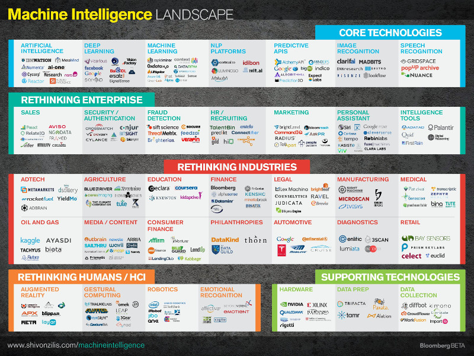
Big but wide data too
Think about it, you can collect information about more customers, but you can also collect more information about one particular customer.
Separating the signal from the noise
Steps:
feature extraction - what data to use in the model, working with incomplete data
regularization - how to weight data in the model
cross-validation - accuracy of the model
https://hbr.org/2015/07/what-every-manager-should-know-about-machine-learning
Feature extraction
which variables to use (data), but also building new features that aggregate important signals
Regularisation
How to tell that our variables reflect signal, but not noise?
regularisation - spit the difference between conservative and flexible model
penalty for complexity
prevents over-fitting
Many flavours of regularisation, but most popular one, is LASSO
Cross-validation
Once model is built how to make sure that it actually makes good predicitons?
Check if it is accurate out of sample for unseen data
10-fold validation
Mistakes to avoid
Confusing prediction and casual model
well trained algorithm should make good predictions for environment it seen
so the more stable our environment the more valuable our predictions
if we move algorithm to new environment we may not get good predictions
it is one of human biases - we try to find patterns and casuation everywhere
e.g. e-commerce data for kilt store, may not be so useful for brick-and-mortar store even if both sell similar product
https://hbr.org/2015/07/what-every-manager-should-know-about-machine-learning
Machine learning algorithms cheatsheet
Go to site (more info)
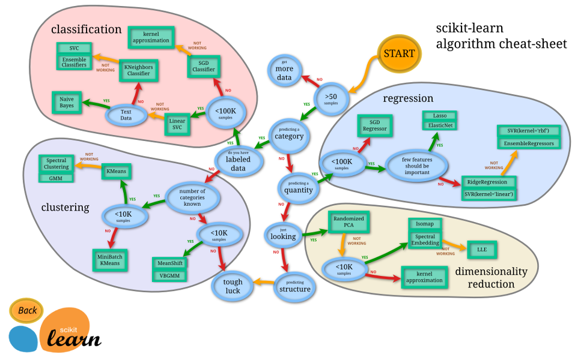
Most important algorithms and their applications
unsuprvised
suprvised
and ?
Decision-tree - finance, organisation decisions, loans, etc.
decision-tree example cord-cutting
https://hbr.org/2015/11/how-machines-learn-and-you-win
math:
coding a matrix
python for data analysis
ml:
machine learning practical online book
basics ...
just a heck of for platform ... list ...
Big Data Landscape (mouseover to zoom)
Open vs close source
Advantages - fast to move, free data
Visual vs coding
State of the art
Open source - Apache Spark, Hadoop ecosystem, ...
Python tools
What tools data scientists use?
Essentials: Python, R, and SQL
At scale: Hadoop, Hive, M/R
Alternatives: Julia, MongoDB, Java
Data visualisation: D3, R/Shiny
How does those tools fit together?
(Website|Website data|Customer support data|Event tracking data)
-> SQL database
-> R or Python
-> (Predictive models|Dashboards and reports|Analysis)
Software stack
Python - a glue language
Pandas, Numpy, SciPy, sci-kit, NetworkX, etc.
Apache Spark + MLLib + GraphX
IPython + Jupyter Notebooks
CPython, Multiprocessing
Anaconda
Not used, but handful Cython (timing example)
IDEs
PyCharm
Scypron (graphical IPython)
Python - a glue language
Python is a great language to work with data because mathematical formulas and algorithms can be developed
almost at literal translation and pseudo-code levels. But, in the same time we have access to wast number of
libraries and frameworks allowing us to concentrate on the problem at hand.
Jupyter Notebooks
IPython
--pylab
--ide
Python IDEs
Databases
Data integration
Good for small evaluation
Often need to bring together for offline analysis
Data warehouses
Small investigations
Neo4j
Hadoop Ecosystem
Spark takeover over Hadoop
Spark (Spark takes over hadoop)
Spark Ecosystem
In this course, we will use
Anaconda that encompases ...
Apache Spark
Neo4j
Setting up
Anaconda
Apache Spark
Pipeline
Environment setup
Installing Anaconda then PySpark
Running the environment
Where data scientists work?
Although “Big Data” may have been the hot topic last year, this year data science has been
permeating the discussion in every board room across the country. Nearly every company wants to
know more about data scientists: Who are they? What do they do? How do we get one? This
report endeavors to answer many of those burning questions, including perhaps the most burning
question of all: What do they earn?
You may be surprised where data science innovation awaits - big companies rather than start-ups
The reasons are that big companies often sit on a big pile of data, while start-ups do not have resources to
spend on that.
Where data scientists work?
Recommendation: Google, Amazon, Spotify,
Banks: Chase, ...
Stock
governments
energy sector
big scale
Where data scientists work?
In fact, data science is becoming so important that it is starting hard to get C-suite job without it.
but, also roles that are in some part a data science, like
e
How much data scientist make?
Seventy-one percent of the sample consists of individual contributors. Their median base salary is
$120,000, and 71% are eligible for a bonus. The median bonus received is $15,650. The other 29%
of the sample are managers. Their median base salary is $170,000, and 82% are eligible for a
bonus. The median bonus received is $36,000.
Plan your career carefully. Evaluate how can you learn, grow skill set, and position yourself to achieve long-term goals.
Consider the level of support data science has organization-wide. Your success will depend on ability to present your findings and solutions to leadership.
Make sure the organization (or team) has the funding and patience to see the fruits of
your labor – it won’t happen overnight.
Be realistic about start-ups. Very few startups become profitable, let alone reach the
success of Facebook or Uber, and most fail within a few years.
Build your business knowledge. . The number one complaint we hear from companies about
data scientists is that they lack business knowledge and skills. Your analysis must be relevant to company business goals.
Develop your communication skills. Presenting findings to a non-technical audience (such
as the marketing team or the C-Suite) is a crucial part of being a data scientist. Presenting your findings can be very challenging,
so develop your storytelling skills.
Who is hiring?
http://careers.goodeggs.com/
Citizens of the world
Open data
links
how big impact open data can have (e.g. parking spot)
Data Science Applications
Technology 40%
Marketing Services 14%
Financial Services 12%
Retail 7%
Corporate-Other 7%
Consulting 7%
Gaming 6%
Healthcare/Pharma 4%
Government 3%
Data Science Team
Working with other teams: marketing, data products, operations, business decisions, product
Data Science Pipeline
Process
Data integration - pull data from many data management systems, resolve any incosistencies (e.g., missing values, different timezones), and reshape.
Data exploration - explore and visualize data. Get intuition about it and observe patterns.
Solution development - develop and implement algorithm solving your problem.
Knowledge management - if you need to manage user privileges or privacy
DS product ownership - make results available to non data scientists (e.g. analysis runnable from Django website)
Alternative taxonomy (OSEMN / Snice)
Obtain: pointing and clicking does not scale
Scrub: the world is a messy place
Explore: You can see a lot by looking
Model: always bad, sometimes ugly
iNterpret: "The purpose of computing is insight, not numbers."
Goal of data integration is to bring all data from different systems in different formats into one data
set that can be analysed.
Example, you come there 100 different databases, in different time zone formats, with some values missing
etc.
80/20 rule of data science
You spend 80% of time on data preparation and only 20% on the analysis.
Data integration is not the best use of data scientist time,
but unfortunately this often is the reality.
This problem can be solved by either:
data integration specialist who will handle this side of a problem or/and
a specialised platform.
Data integration specialist
This is a person that will come from the company to which you work as contractor preparing the data for
you to work with or at least giving the guide over the available data and working with you explaining
what it means and resolving any problems.
Platforms
(idea and examples)
Insights -- Dashboards
Analysis
Data lake
Infrastructure
Precision/accuracy/generalisation tradeoff
Also need to take time constraints into account
Less accurate data delivered quickly may be of greater business value than very accurate delivered too late
Balancing with other priorities
Popcorn method
You stare at the data (possibly eating popcorn) until something pops up.
This approach may sounds stunning, but with data science a lot of things come with experience and domain knowledge.
Data preparation
When beginning to work with data you should ask yourself 3 questions:
What data do I have?
What data do I need?
What is the most evil thing I can do with data?
What data do I have?
What data is there?
What data do I need?
What data do I need for my analysis?
What is the most evil thing I can do with data?
Not really evil, but helps to think about possibilities, really spark the discussion, but also helps to
think about what protections need to be put in the place.
Data science algorithms - biggest differentiator of statistician and DS (CS)
Data exploration
what problem are we trying to solve?
what problems are most important?
how to choose most important one?
OLAP - Online Analytical Processing
OLTP - Online Transaction Processing
The purpose of computing is insight, not numbers.
Richard Hamming, 1961
Solution development
We need to develop code that solves our problem or gains the insight.
Knowledge management
We need to manage who gets access to the results and how data is shared across country borders,
who inside company can read it, etc.
Ownership
Telling a story - presenting the insight; communicating results to varied audiences; advocating for data within an organisation
Developing application
Making the analysis rerunable
Data
Obtaining data and data sets for experimentation
https://scraperwiki.com/
http://selectorgadget.com/
Data science process example
Some interesting problem to solve with all 5 steps
-- link to notebook
Data Science @ Work
Day of Data Scientist work
Research
Insight
App enginerring
Exploration
How data transforms business
Data
Data-driven enterprise
Analytical enterprise
Examples from Real World
Netflix Challenge
Recommendation engines
Amazon
Netflix
Spotify
Fraud detection
PayPal
banks
Advertising
LinkedIn
Google
Facebook
eBay, Amazon
Customer attortion
banks
Marketing
Adobe
Government
Optimising power grid efficiency
Fighting terrorism and crime
Cyber security
Situation awarness in defense
Financial forecasting dynamics
Early detection in health care
Optimising procedures
NY ambulances - crew sitting places (toilet and coffee)
response questionary
saved 1 minute and in turn many lives
Optimising business procedures
UPS never makes left turns
and they update routes in real-time
Google maps + traffic
(but most boring)
Referral, , etc. - who are my customers?
Loyalty clubs just to track us
NLG: estate advertisements generation
interesting bias embedded in the language
cosy, small < 400sq ft
big, large, spacy - normal or under normal size
NLG: automated sport article writing
Future?
Customer walks in...
... and computer system displays you what one product he or she should buy (you to sell)
(e.g. apple sauce)
IoT
Organisation
To follow up people
Jeremy Howard
To follow up blogs
Homework
https://www.ted.com/talks/jeremy_howard_the_wonderful_and_terrifying_implications_of_computers_that_can_learn?language=en#t-1144783
https://youtu.be/GXjjMSn2Nws
d3.js video